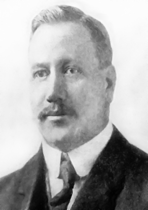
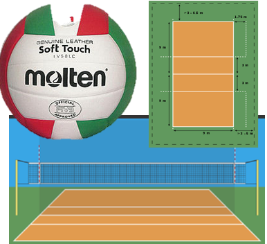

|
Historia

El Volleyball fue creado en 1895 por William George Morgan, el entrenador deportivo de la Asociacion Cristiana de Jovenes. Durante los siguientes años el deporte se fue volviendo famoso por todo el mundo primeo llego a Canada y en seguida llego a Asia. Durante la primera Guerra Mundial los soldados lo intrudujeron en Europa volviendolo un deporte muy famoso. Los equipos mas famosos de Europa en esos años fueron los de La Union Sovietica y Checoslovaquia |
Campo de Juego

Es un rectangulo de 18m por 9m de ancho, tiene una line central que divide a los dos equipos 3m despues esta la linea de ataque los otros seis metros hasta la ultima linea la cual es llamada linea de fondo, la red la cual esta sobre la linea central se encuentre a 2.43m de altura para los hombres, 2.24m para las mujeres y 2.55m para los equipos mixtos. El balón es de 65-67cm y pesa de 260 a 280 gramos. |
Tiempo de Juego
El partido puede estaer formado por tres, cuatro o cinco sets, el set se gana despues de que uno de los dos equipos haya llegado a 25 puntos, o una diferencia de 2 puntos si se encuentran 24-24 deberan llegar a 26 siempre teniendo dos puntos de diferencia. El entrenador puede pedir tiempos de descanso de 30 segundos en la zona libre, muchas veces se hacen estos tipos de tiempo de descanso en el punto 8 y 16 excepto en el set 5 que es el set definitivo. |